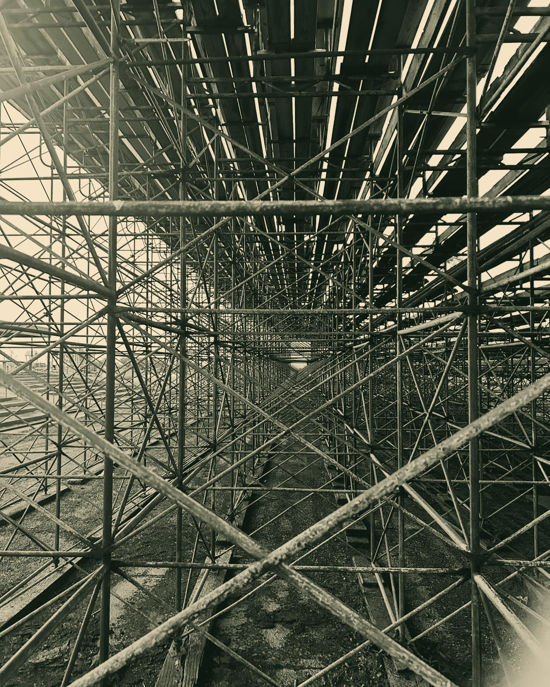
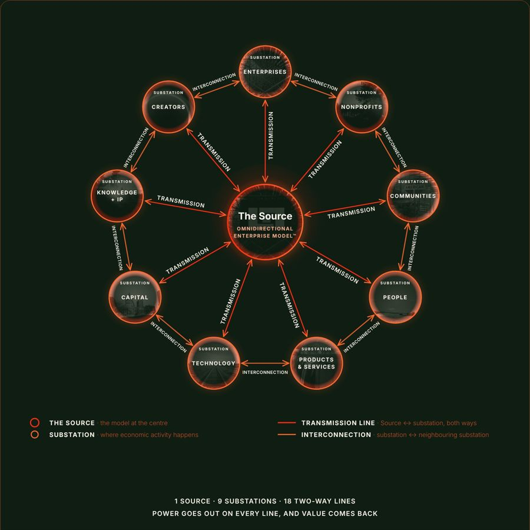

Omnidirectional Enterprise Systems™ · The Business Model
The Enterprise System Model
The business model and how to read it: the problem we solve, the idea that changes it, how the power keeps flowing, and how value moves through every circle and line.
The four models
One model, four phases.

The Enterprise System Model
Nobody builds alone. Not anymore.
Every enterprise plugs into the same foundation, the same Grid and the same flow of value. Here is how it works, and where you fit in.
At a glance
The business model, in The IV Phases™.
The same four phases every enterprise on the Grid runs on, applied to our own business model.
- IPhase I · FoundationsDefine it.The problem, and the idea that changes it.
- IIPhase II · Infrastructure Planning & ManagementPlan it.How the power keeps flowing: license, put to work, reinvest.
- IIIPhase III · Internal Operating SystemsLive it.Ways in, and where you fit in on the Grid.
- IVPhase IV · PreservationPass it on.Why it lasts, local to global.
Phase I · Foundations · The problem
Value is created everywhere. It is captured in few places.
Capital, labor, ideas, technology and decisions still run through systems that reward the few, not the people who build. Returns concentrate. Whole regions get left out. And when the founder steps back, the enterprise falters.
And most enterprises go it alone: their own playbook, their own capital, their own walls. Every one of them starting from zero.
Phase I · Foundations · The idea
Every enterprise, on equal footing.
We say enterprise, not business, on purpose. Small business, corporation, nonprofit: those are tax structures, not ranks. Here, every enterprise plugs in as a collaborator, and value moves in every direction instead of up a ladder.
Power inside every enterprise
Each enterprise runs on the same foundation: licensed IP and The IV Phases™, one shared way to decide, organize and grow.
Then across every sector
Interconnections carry products, services, ideas and revenue straight from one enterprise to another, across sectors, both ways.
Into a grid that sustains communities
What grows is a living web of exchange, built to keep communities strong from local to global.
Old-school, honorable business ethics. Modern, collaborative economic power.
Phase II · Infrastructure Planning & Management · How it runs
How the power keeps flowing.
License the IP, put it to work
The Source owns and licenses the IP. Enterprises license it and plug it into what they already do best.
Start free. Grow from there.
Membership starts free. Partnership™ and The Co.LLab Founders Organization™ are the deeper ways in.
Returns keep moving
Returns are reinvested across the portfolio to fund new IP, creator work and community programs, so the whole Grid gets stronger.
Phase III · Internal Operating Systems · Ways in
Start free. Climb as you grow.
Four ways onto the Grid. Step on where you are today, and step up when you are ready.
- 01
Start
Free Membership
The free tools, a guided quest and your Infrastructure Snapshot™. No card needed.
Join free → - 02
Grow
The .LLab Membership™
Every Phase I–IV product and the full Infrastructure Analysis™.
See Membership → - 03
Build
Partnership™
Define, plan, live and preserve your legacy, with seats for your team.
Explore Partnership™ → - 04
Back the build
The Co.LLab Founders Organization™
Back the build. Credited in full toward a Partnership™.
Become a Founder →
Phase III · Internal Operating Systems · Where you fit in
Build it with us.
Power the Source
Partnership investment powers the Source through the Investment Current, and every other Current runs on it.
Plug into the Grid
License the IP, apply it to what you already do best, and collaborate directly with enterprises across every sector.
Make it real, together
Start free with the tools and a guided quest, then build your enterprise on The IV Phases™ with the whole network behind you.
Join Omnidirectional Enterprise™ Membership · Starting free →
Phase IV · Preservation · Why it lasts
Built to last. Built to scale, local to global.
Ideas never run out
One idea can power many enterprises at once. Every enterprise feeds back what it learns, so the IP keeps getting better. Returns are reinvested, not extracted, and the Preservation phase plans for succession, so what you build is built to outlast you.
Global economics
Geopolitical realignment, supply-chain restructuring, automation and the rise of intangible assets are redrawing where value is made. The model is designed to spread IP ownership and commercial infrastructure across many enterprises and regions, wire sectors together directly, and grow local economic participation.
Read the model
How power and value move through the model.
Every circle and line in power-grid terms, then every figure, step by step.
The key
Every circle and line, in power-grid terms.
- The SourceThe centre: the model itself. It powers every substation and owns and licenses the IP.
- SubstationA place where economic activity happens. Each one powers its own area.
- Transmission lineSource ↔ substation, two-way: power goes out, value comes back.
- InterconnectionSubstation ↔ substation, or Conductor ↔ Conductor. Every circle can reach every other.
- CurrentA named flow of value moving through the model.
- ConductorAn enterprise running the whole model.
- The GridConductors wired together, open to every enterprise that joins.

The model, figure by figure
The Omnidirectional Enterprise Model™: where the power starts.
Everything starts here. The Source sits at the centre: the model itself, powering the whole system and owning and licensing the IP. Around it are substations, each one a place where economic activity happens. Just like a power grid, the Source sends power down Transmission lines to every substation, and each substation lights up its own area.
- Start at the centre. The Source powers every substation.
- Follow a Transmission line out. Power goes from the Source to a substation, and value comes back. Two-way.
- Follow an Interconnection around. Substations exchange directly with each other, without going through the Source. This is what makes the model omnidirectional.

Figure 2 · The blueprint
This is what our enterprise is built on.
We didn’t just design this model. We built The Co.LLab™ on it, to test drive it as a real enterprise. Every substation is run by a part of our enterprise, so you can see exactly how one enterprise organizes, operates and grows under the model.
- Every circle connects with every other circle. Neighbours connect directly, and every substation reaches every other substation, both ways: the star shapes inside the circle.
- Read each substation. It names the part of The Co.LLab™ that runs it, from Partnership™ in Enterprises to The .LLab Creators™ in Creators.
- Follow the numbered Currents. Named flows of value move between the Source and the substations, from the Investment Current to the Impact Current.
- Use it as a blueprint. Any enterprise can map its own structure onto the same substations. Currents are not fixed to these routes: value can flow from any circle to any other.

Figure 3 · A few enterprises
Enterprises plug in, and start collaborating.
From there, any enterprise can run the model. Each one becomes a Conductor: its own Source, substations, Transmission lines and Interconnections, wired straight into the substations of other Conductors, both ways.
- Find one Conductor. A whole Omnidirectional Enterprise, drawn as in Figure 2.
- Follow an Interconnection across. Solid white lines join every Conductor to every other Conductor, both ways.

Figure 4 · The Grid
Conductors wired together: the Grid.
Every enterprise that runs the model is a Conductor, and every Conductor joins the Grid. Interconnections link its substations to the Conductors around it, so value can travel from any circle to any other. And here is the power of it: every new Conductor adds circles, but connections grow faster than circles. n circles can make n(n−1)/2 two-way connections.
- Find The Co.LLab™ in the centre. One Conductor, the one we run.
- Look around it. Other Conductors, each running the whole model, each with its own Source and substations.
- Follow an Interconnection across. Substation to substation, Conductor to Conductor, both ways. More Conductors can join, without end: every Grid is one circle of a larger Omnidirectional Enterprise™.

The Grid
Every line leads somewhere.
Transmission lines, Interconnections and Currents: follow any one of them and you reach another enterprise.
The detail
Read more, when you want it.
Why build inside it — How it works and what each substation gains.
Why build inside it
An economic enterprise system, not another program.
Most enterprises are built alone. Each one writes its own playbook, looks for its own capital, protects its own ideas, and keeps its returns inside its own walls. That is slow and costly, and it leaves the enterprise exposed when the founder steps back, people change, or the market shifts.
Omnidirectional Enterprise™ treats enterprise as a system. The foundations, governance, knowledge, connections, and reinvestment are built once, shared across every participant, and kept moving, so each enterprise builds on what the others have already built. The mechanisms that make it work:
Ideas you license and put to work
Instead of inventing every framework, tool, and process from scratch, an enterprise licenses intellectual property from the Source and applies it to what it already does best. What it learns flows back through the Living IP Current, so the IP keeps improving for every enterprise that uses it. Ideas, unlike physical goods, can be used by many people at once.
One way to decide and organize
Every participant builds from the same playbook: The IV Phases™ (Foundations, Planning, Operating, and Preservation). Enterprises in different sectors share the same language for decisions, so they can work together without starting over each time. Preservation plans for the moment the founder steps back, people change, or the market shifts.
Connections in every direction
Enterprises, nonprofits, creators, and communities build side by side, linked by Interconnections. With a license or Membership, an enterprise can join The .LLab Collaborating Enterprises, where other enterprises in the system can find it and work with it.
Returns that keep moving
Returns are reinvested across the portfolio to fund what comes next. Partnership investment powers the Source through the Investment Current, and impact allocation, giving, and charity support reach Nonprofits through the Impact Current. Value keeps moving to everyone who helps create it.
What each substation gains from the system.
A foundation to build from
Licensed IP, one governance model, and direct connections to other enterprises, so an enterprise grows inside a system instead of alone.
Support that arrives by design
Impact allocation, giving, and charity support flow to Nonprofits through the Impact Current, built into the system rather than left to chance.
Work that stays close to home
Creators' products, IP, and community support projects reach Communities through the Creative Current.
Infrastructure without giving up authorship
Distribution infrastructure through Technology, while creators keep authorship of their IP.
A place to start, free
Free tools open to everyone, and a free account to work guided quests and receive the Infrastructure Snapshot™.
Investment that powers the whole system
Partnership investment from Enterprises and Capital powers the Source. Every other Current depends on it.
Built to last, built to grow.
Every enterprise that joins takes in the model, applies it, and returns value to the system. Each one then runs the same model for the enterprises, creators, and communities it serves, so the system grows outward one generation at a time. Everyone who takes part is named on the Omnidirectional Legacy Wall, by area, and never removed: an enterprise legacy, built together.
What changes — How enterprises are built, supported and expanded.
What changes
How enterprise systems are built, supported, and expanded.
From one shared foundation
Every enterprise starts from the same foundation: the intellectual property of the Source and The IV Phases™ (Foundations, Planning, Operating, and Preservation). An enterprise takes in that foundation and applies it to what it already does best, becoming a Conductor in the system instead of building alone from nothing.
From every direction
An enterprise draws from the Source through its Transmission line and exchanges directly with other enterprises through Interconnections. Help, knowledge, and collaboration do not have to pass through one centre; they reach each enterprise from many sides at once.
Outward, one generation at a time
Each Conductor runs the same model for the enterprises, creators, and communities it serves. The web keeps branching outward, and every new enterprise joins the same connected system rather than starting a separate one.
Between the substations — How impact flows from sector to sector.
Between the substations
How impact flows from sector to sector.
The figures name substations, each a sector where economic activity happens: Enterprises, Nonprofits, Communities, People, Products & Services, Technology, Capital, Knowledge + IP, and Creators. The IV Phases™ give every substation one common way to decide and organize. Lines carry value between them:
Transmission lines
Carry power from the Source out to each substation and carry value back. Two-way.
Interconnections
Let two substations, or two enterprises, exchange directly without going through the Source. This is what makes the model omnidirectional.
Currents
Named flows of value in a set direction. Figure 2 shows them, from the Investment Current to the Impact Current.
Because every substation is linked to the Source and to its neighbours, impact made in one sector can reach the others. Partnership investment from Enterprises and Capital powers the Source; the Source licenses its IP back out through Knowledge + IP and Products & Services; enterprises return what they learn, strengthening the IP; creators' work reaches Communities; and impact allocation, giving, and charity support reach Nonprofits.
The goal — Great enterprise legacy, built together.
The goal
Great enterprise legacy, built together.
Omnidirectional Enterprise™ exists to help people build great enterprise legacy: enterprises that last, and that strengthen the enterprises around them. Participating enterprises connect across sectors, work with each other interconnectedly, and support the economic development of every enterprise taking part.
The economic case — Creating value and capturing value are different processes.
How the system works
Generating value and capturing value are different processes.
Economic performance depends not only on creating value, but on the systems governing how resources are coordinated, intellectual property is owned, decisions are made, innovations reach markets, and returns are captured and reinvested.